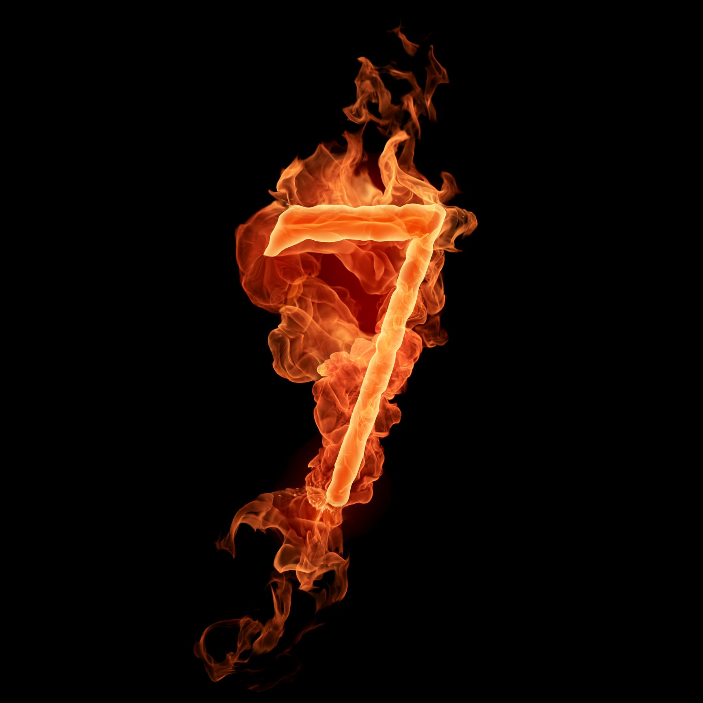

This world is full of mysteries and treasure. The only thing is we do not see it. If we discover the actual basics on which this world works, it would not less than magic to us. On the other hand we have just two beliefs uptil now, one is who trust in God and the other who goes in science. Some are, who are still confused what is true or more correct and there are many who take up both.
This world is unaware of the actual powers this nature has. No one knows surely not even me about the truth but there are many signs which make me think again on this topic.
Only! Only! Five per cent of EARTH is explored yet! Did you know about it. May, it may increase by time but at present it is just this little. And people think to be very intelligent. Hey! If you are so intelligent then go on and discover the rest.
There is a name behind the discovery of Mercury, Venus, Mars, Jupiter etc. Many of us know who named these planets, but the fact is, it is still unexplored or unknown and untold, why we call our planet earth, "EARTH". No one knows how this name came up. Do you know? How will you come to know. This is also one of the mysteries in the 95% as how we talk about exploring Earth but stiil unaware of it's existence. Name "EARTH!!".
This was about our world. Among these mysteries there is a greater mystery of the number seven! Many may find this number lucky and many may not. Leaving all this stuff, the number seven has many more things to do which we know but never found much interesting and considered normal. This is the same as the story of famous apple which fall on a boy and made a history. I hope you are familiar with it. This 7 also stands on the same level and deserves same.
I am going to recollect all the facts related to number 7 seven.
The number seven is magical and special in its own way. Some people are still not able to collect the similarities but it is now going to be done.
The number seven stands everywhere, in religious matters, scientific issues, biology, spirituality and the most on co-incidents. It is the true story of our world if we can explore it then.
'सात' यह तो हिन्दी मे भी बहुत महत्व रखता है । आपको तो पता ही होगा की संगीत मे 'सात स्वर' होते है । इतना ही नही हिन्दू धर्म जैसे कई और धर्म मे शादी की रस्म मे "सात फ़ैरे" ही होते है । "सात जन्म " का साथ होता है। यह सात अपनी छाप हर जगह छोड़ चुका है । शायद आपने इन सब बातों को नजरअंदाज कर दिया हो पर यह आप सब जानते होंगे ।
Apart from this there are seven wonders of the world. Did you ever think about it? No! Why this world was able to consider only seven wonders of world? Why not more? It is still a deep fact. Related to constructions seven pyramid like structures were made on the same period of time in history, one of which "The Great Pyramid of Giza" is still one of the unknown mystery. How people at that time, those who did not have any means of communications developed a structure at same time at seven different places. A deep unsolved mystery.
Now getting into the mystery, so many of you may be familiar to "BERMUDA TRIANGLE" which is very famous between scientists, detectives and common people. There are more similar to it, bigger than it and dangerous than it. Like the "DRAGON TRIANGLE" and the "BENNINGTON TRIANGLE" are still mystery. you know what! These places are aligned straightly in a line.
Ther are seven continents in this world. Namely Asia, Europe, Australia, Antarctica, North America, South America and Africa. Similarly, seven oceans also in which Pacific ocean is the largest followed by Indian ocean.
हमारे शरीर मे "सात चक्र" होते है जो अगर संतुलित हो तो हमे बहुत शक्ति प्रदान करती है । इससे दिव्य शक्ति की भी प्राप्ति हो सकती है । साथ ही साथ "सात रस्मे" भी होती है । "सात तारीक" बहुत शुभ मानी जाती है ।
Our skin gets changed, skin cover which gets removed or dead skin cells, in seven years. means in every seven years our skin cells are removed and completely new cells take place. This takes place in a period of seven years.
"सात जन्म' लेते है लोग इस दुनिया मे कहा जाता है । पता नही सच है या नही पर यहा पर सात जरूर आता है ।
This is just the beginning, we have many more things and mysteries unseen.